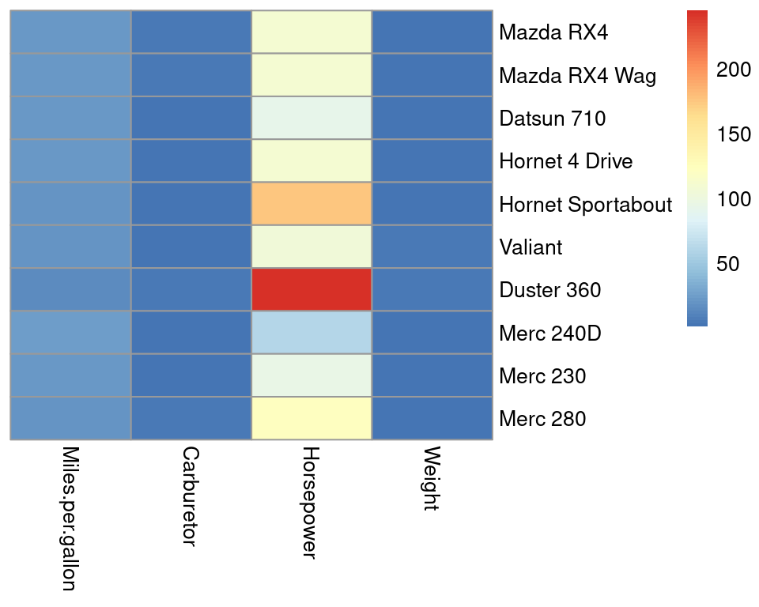
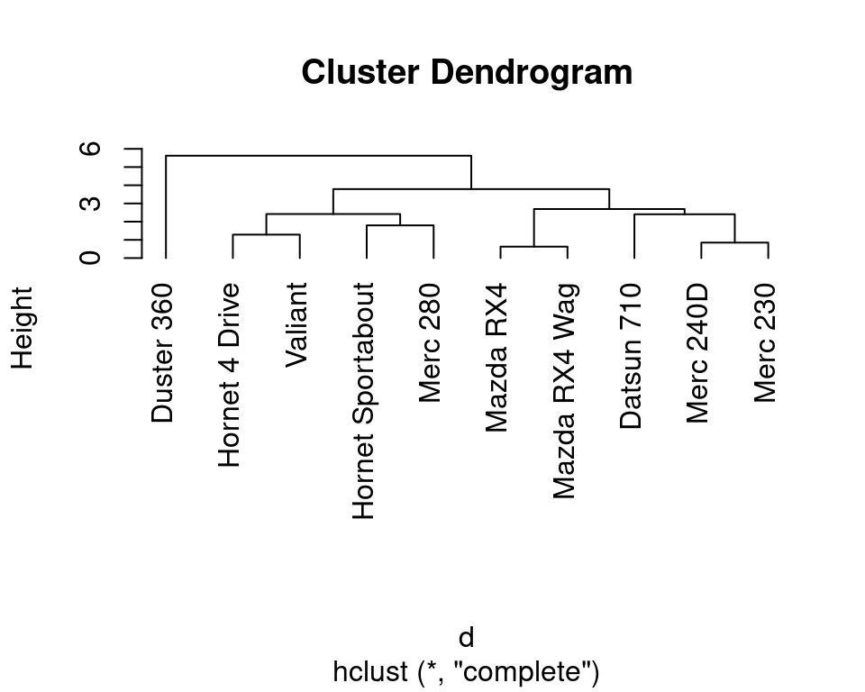
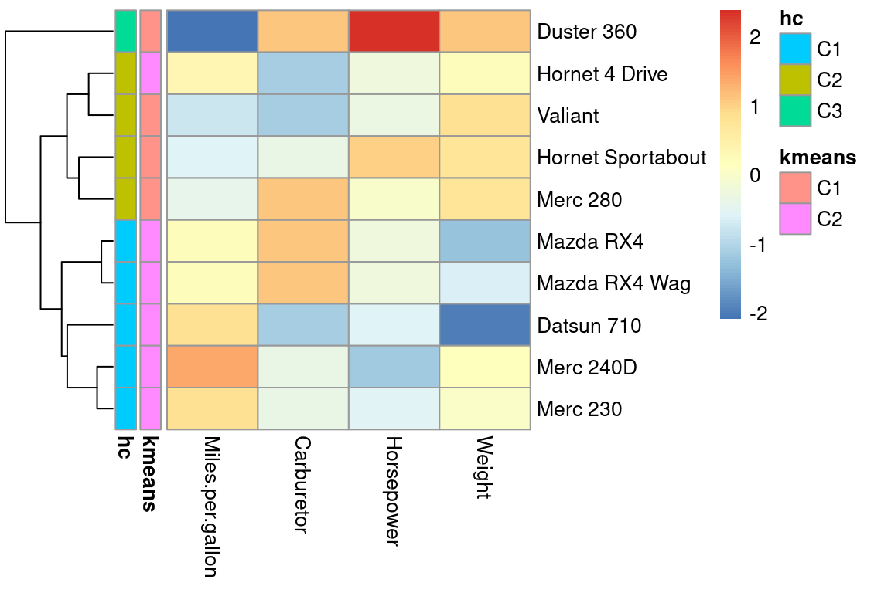
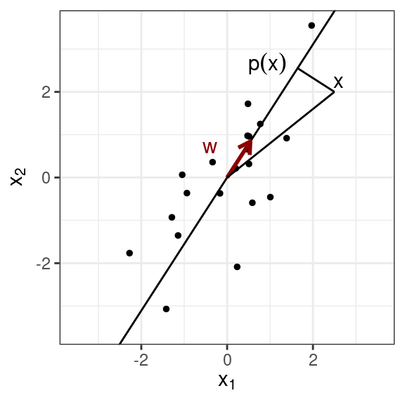
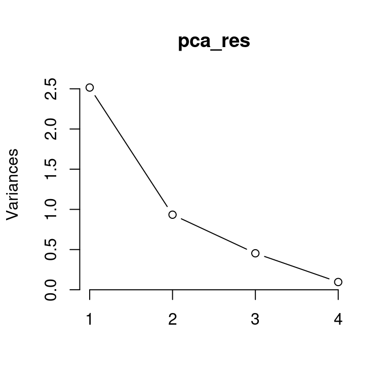
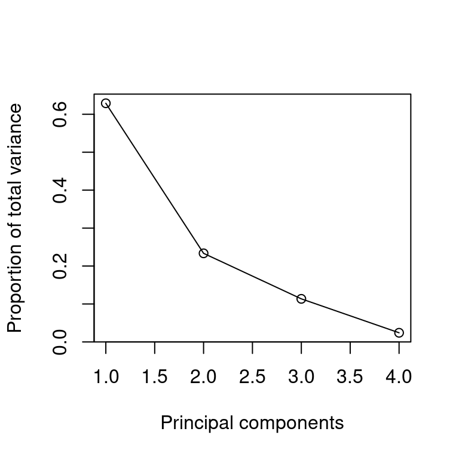
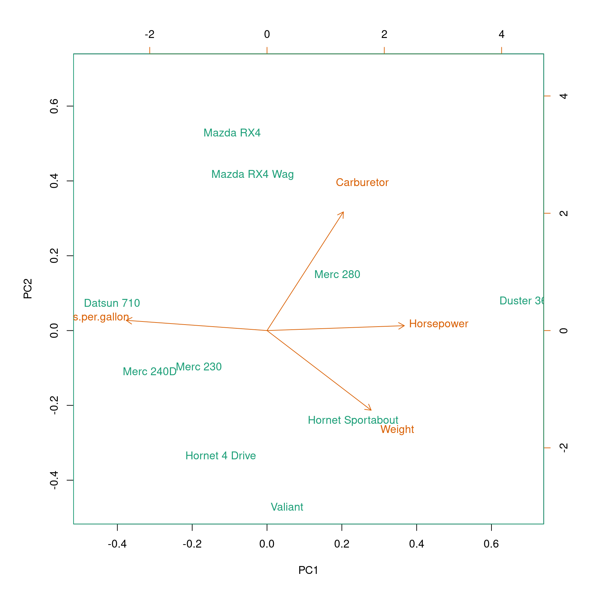

Chapter 5 High dimensional visualizations
In this chapter, we turn our attention to the visualization of high-dimensional data with the aim to discover interesting patterns. We cover heatmaps, i.e., image representation of data matrices, and useful re-ordering of their rows and columns via clustering methods. To scale up visualization to very high-dimensional data, we furthermore introduce Principal Component Analysis as a dimension reduction technique.
5.1 Notations
Lower cases are used for scalars (e.g. \(x\)), bold lower cases for vectors (e.g. \(\mathbf x\)) and bold upper cases for matrices (e.g. \(\mathbf X\)). The transpose of a matrix or of a vector is denoted with a T-superscript (e.g. \(\mathbf X^\top\)). The Euclidean norm of vector \(\mathbf x\) is denoted \(||\mathbf x||\).
Methods of this chapter assume numeric variables. If encountered, categorical variables can be transformed to numeric variables by one-hot encoding.5
We denote \(n\) the number of observations, \(p\) the number of variables, and \(\mathbf X\) the \(n \times p\) data matrix.
5.2 Data matrix preparation
We use a subset of the base R mtcars dataset consisting of 10 rows (cars) and four selected variables. We store this data into the numeric matrix mat. For ease, we give full names (rather than abbreviations) to the columns and keep the row names (car names).
library(data.table)
mat <- as.matrix(mtcars[1:10, c("mpg", "carb", "hp", "wt")])
rownames(mat) <- rownames(mtcars)[1:10]
colnames(mat) <- c("Miles.per.gallon", "Carburetor", "Horsepower", "Weight")
head(mat) # A look at the first rows## Miles.per.gallon Carburetor Horsepower
## Mazda RX4 21.0 4 110
## Mazda RX4 Wag 21.0 4 110
## Datsun 710 22.8 1 93
## Hornet 4 Drive 21.4 1 110
## Hornet Sportabout 18.7 2 175
## Valiant 18.1 1 105
## Weight
## Mazda RX4 2.620
## Mazda RX4 Wag 2.875
## Datsun 710 2.320
## Hornet 4 Drive 3.215
## Hornet Sportabout 3.440
## Valiant 3.4605.3 Heatmaps
Beyond 5 to 10 variables, matrix scatterplots cannot be rendered with enough resolution to be useful. However, heatmaps which simply display data matrices as an image by color-coding its entries, become handy. Heatmaps allow visualization of data matrices of up to ca. 1,000 rows and columns (order of magnitude), i.e the pixel resolution of your screen (and maybe of your eyes!).
To draw heatmaps, we recommend using the library pheatmap (pretty heatmaps), which offers convenient functionalities in particular for clustering (See Section 5.4.2).
Here is a basic call to pheatmap on our data matrix mat:
library(pheatmap) ## pretty heatmap
pheatmap(mat, cluster_rows=FALSE,
cluster_cols=FALSE)
Strikingly, the horsepower variable saturates the color scale because horsepower lives in a different scale than the other variables. Consequently, we barely see variations in the other variables.
5.3.1 Centering and scaling variables
Bringing variables to a common scale is useful for visualization but also for computational and numerical reasons. Moreover, it makes analysis independent of the units chosen. For instance the mtcars dataset provide car weights in 1,000 pounds and gas consumption in miles per gallon. We would certainly want our analysis to be the same if these variables were expressed with the metric system.
The widely used operations to bring variables to a same scale are:
centering: subtracting the mean
standard scaling or Z-score normalization: centering then dividing by the standard deviation
These operations are implemented in the base R function scale() and are often offered as parameters of other functions. Scaling is usually done for variables (data matrix columns). However, in some application contexts, row-scaling can be considered as well.
With pheatmap we can also scale the data by rows or columns by setting the argument scale accordingly. We do it here in the classical way, by column:
pheatmap(mat, cluster_rows=FALSE, cluster_cols=FALSE,
scale='column')Figure 5.1: Scaled heatmap.
Scaling allows us to appreciate the variation for all variables. The default color scale is centered on 0. Because each column is centered, we find positive (red-ish) and negative (blue-ish) values in each column.
5.4 Clustering
While all data are rendered in the Figure 5.1, it is hard to see a pattern emerging. Which cars are similar to each others? Which variables are similar to each other? Clustering is the task of grouping observations by similarities. Clustering helps finding patterns in data matrices. Clustering can also be applied to variables, by simply applying clustering methods on the transpose of the data matrix.
There are several clustering algorithms. In the following sections, we explain two widely used clustering methods: K-means clustering and hierarchical clustering.
5.4.1 K-Means clustering
5.4.1.1 Objective
K-Means clustering aims to partition the observations into \(K\) non-overlapping clusters. The number of clusters \(K\) is predefined. The clusters \(C_1,...C_K\) define a partition of the observations, i.e., every observation belongs to one and only one cluster. To this end, one makes use of so-called cluster centroids, denoted \(\boldsymbol\mu_1, ..., \boldsymbol\mu_K\), and associates each observation to its closest centroid (Figure 5.2).

Figure 5.2: K-means clustering partitions observations into K clusters (here K=3) by associating each observation to its closest centroids (crosses).
Formally, one aims to determine the clusters \(C_1,...,C_K\) and the centroids \(\boldsymbol\mu_1,...,\boldsymbol\mu_K\) in order to minimize the within-cluster sum of squares:
\[\begin{align} \min_{C_1,...,C_K, \boldsymbol{\mu}_1,...,\boldsymbol{\mu}_k} \sum_{k=1}^K\sum_{i \in C_k}|| \mathbf x_i - \boldsymbol{\mu}_k||^2 \tag{5.1} \end{align}\]
where \(||\mathbf x_i - \boldsymbol\mu_k||^2 = \sum_{j=1}^p(x_{i,j} - \mu_{k,j})^2\) is the squared Euclidean distance between observation \(\mathbf x_i\) (the \(i\)-th row vector of the data matrix) and the centroid \(\boldsymbol{\mu}_k\).
5.4.1.2 Algorithm
The minimization problem (Equation (5.1)) is difficult because of the combinatorial number of partitions of \(n\) observations into \(K\) clusters. However, two useful observations can be made.
First, if we assume that the positions of the centroids \(\boldsymbol\mu_k\) are given, then each summand \(|| \mathbf x_i - \boldsymbol{\mu}_k||^2\) in Equation (5.1) can be minimized by including the observation \(\mathbf x_i\) to the cluster of its closest centroid. The number of clusters \(K\) depends on the dataset.
Second, if we now assume that the clusters are given, then the values of the centroids that minimize \(\sum_{i \in C_k}|| \mathbf x_i - \boldsymbol{\mu}_k||^2\) are the observation means, i.e. \(\boldsymbol\mu_k = \frac{1}{|C_k|}\sum_{i \in C_k} \mathbf x_i\). Hence, the centroids are the cluster means, giving the name of the algorithm.
These two observations lead to an iterative algorithm that provides in practice good solutions, even though it does not guarantee to find the optimal solution.
Figure 5.3: K-mean algorithm. Source: https://en.wikipedia.org/wiki/K-means_clustering
K-Means algorithm (Figure 5.3)
Choose the \(K\) initial centroids (one for each cluster). Different methods such as sampling random observations are available for this task.
Assign each observation \(\mathbf x_i\) to its nearest centroid by computing the Euclidean distance between each observation to each centroid.
Update the centroids \(\boldsymbol\mu_k\) by taking the mean value of all of the observations assigned to each previous centroid.
Repeat steps 2 and 3 until the difference between new and former centroids is less than a previously defined threshold.
At every iteration, and at every step 2 and 3, the within-cluster sum of squares (Equation (5.1)) decreases.
However, there is no guarantee to reach the optimal solution. In particular, the final clustering depends on the initialization (step 1). To not overly depend on the initialization, the K-means algorithm is typically executed with different random initializations. The clustering with lowest within-cluster sum of squares is then retained.
5.4.1.3 Considerations and drawbacks of K-Means clustering
We have to make sure that the following assumptions are met when performing k-Means clustering (Figure 5.4, Source: scikit-learn):6
- The number of clusters \(K\) is properly selected
- The clusters are isotropically distributed, i.e., in each cluster the variables are not correlated and have equal variance
- The clusters have equal (or similar) variance
- The clusters are of similar size

Figure 5.4: Situations for which K-means fail to retrieve underlying clusters
5.4.1.4 K-Means clustering in R
Let us now apply K-means to the mat data matrix searching for 2 clusters. This can be easily achieved with the function kmeans(). While not necessary, it is a good idea to scale the variables, in order not to give the variables with larger scales too much importance (by dominating the Euclidean distances). Another way to look at it, is that the scaling reduces to some extent the problem of anisotropic clusters. In the following code, we first scale the data matrix with scale(). We also use the argument nstart of kmeans() to perform multiple random initializations.
k <- 2
X <- scale(mat) # use the scaled variables for the clustering
clust_km <- kmeans(X, k, nstart = 20) # K-means 20 times
clust_km$cluster # clusters of the best clustering## Mazda RX4 Mazda RX4 Wag Datsun 710
## 2 2 2
## Hornet 4 Drive Hornet Sportabout Valiant
## 2 1 1
## Duster 360 Merc 240D Merc 230
## 1 2 2
## Merc 280
## 1We now update our heatmap with the results of the clustering. We make use of the annotation_row argument of pheatmap() which generates color-coded row annotations on the left side of the heatmap. We furthermore order the rows of the data matrix by cluster.
# create the row annotation data frame
row.ann <- data.frame(
kmeans = paste0("C",clust_km$cluster) # we call the cluster C1,..,CK.
)
# rownames are used to match the matrix rows with the row annotation data frame.
# We can now safely reorder the rows of X.
rownames(row.ann) <- rownames(X)
# o: order of the rows to have increasing cluster number
o <- order(clust_km$cluster)
pheatmap(
X[o,], # X with ordered rows according to cluster number
scale='none', # no need to scale, X is scaled
annotation_row = row.ann,
cluster_rows=FALSE, cluster_cols=FALSE
)Figure 5.5: Pretty heatmap with K-mean cluster annotation.
Cluster \(C_1\) appears to group the heavy, powerful and gas-consuming cars and cluster \(C_2\) the light, less powerful and more economic cars.
5.4.2 Hierarchical clustering
A major limitation of the K-means algorithm is that it relies on a predefined number of clusters. What if the interesting number of clusters is larger or smaller? Hierarchical clustering allows exploring multiple levels of clustering granularity at once by computing nested clusters. It results in a tree-based representation of the observations, called a dendrogram. Figure 5.6 shows an example of a hierarchical clustering using two variables only.
Figure 5.6: Example of a hierarchical clustering for two variables. (A) Dendrogram (tree on the left) along with the heatmap. (B) Scatterplot of the same data as in (A).
Unlike with K-means, there is no objective function associated with hierarchical clustering. Hierarchical clustering is simply defined by how it operates.
We describe bottom-up or agglomerative hierarchical clustering:
Initialization: Compute all the \(n(n − 1)/2\) pairwise dissimilarities between the \(n\) observations. Treat each observation as its own cluster. A typically dissimilarity measure is the Euclidean distance. Other dissimilarities can be used (1-correlation), Manhattan distance, etc.
For \(i=n, n-1, ..., 2\):
Fuse the two clusters that are least dissimilar. The dissimilarity between these two clusters indicates the height in the dendrogram at which the fusion should be placed.
Compute the new pairwise inter-cluster dissimilarities among the \(i − 1\) remaining clusters using the linkage rule.
The linkage rules define dissimilarity between clusters. Here are four popular linkage rules:
Complete: The dissimilarity between cluster A and cluster B is the largest dissimilarity between any element of A and any element of B.
Single: The dissimilarity between cluster A and cluster B is the smallest dissimilarity between any element of A and any element of B. Single linkage can result in extended, trailing clusters in which single observations are fused one-at-a-time.
Average: The dissimilarity between cluster A and cluster B is the average dissimilarity between any element of A and any element of B.
Centroid: The dissimilarity between cluster A and cluster B is the dissimilarity between the centroids (mean vector) of A and B. Centroid linkage can result in undesirable inversions.
5.4.2.1 Hierarchical clustering in R
In R, Hierarchical clustering can be performed in two simple steps. First, we compute the distance between observations (rows of a data.table) across variables (columns of a data.table) with the help of the function dist(). Here, the Euclidean distance between rows is computed by default. Alternatives include the Manhattan or Minkowski distance. As for K-means, it is recommended to work on scaled variables to not give too much importance to variables with large variance. We therefore compute the pairwise Euclidean distance to our scaled data matrix X. Second, we use the resulting Euclidean distance matrix as a dissimilarity matrix to perform Hierarchical clustering with the help of the function hclust(). We use here the default linkage rule (complete).
d <- dist(X) # compute distance matrix with default (Euclidean)
hc <- hclust(d) # apply hierarchical clustering with default (complete linkage rule)The results of hierarchical clustering can be shown using a dendrogram (i.e., a tree representation). Here, observations that are determined to be similar by the clustering algorithm are displayed close to each other in the x-axis. The height in the dendrogram at which two clusters are merged represents the distance between those two clusters.
plot(hc, hang=-1) # hang=-1 align observation labels at the bottom of the dendrogram
5.4.2.2 Pretty heatmaps including hierarchical clustering
As illustrated before, the library pheatmap enables the easy creation of heatmaps. In the previous example, we set the parameters cluster_rows and cluster_cols to FALSE to avoid the default computation of hierarchical clustering. If we want to include hierarchical clustering, we can simply set these parameters to TRUE or let R consider its default values.
pheatmap(X, cluster_rows=TRUE, cluster_cols=FALSE, scale='none')
Compared to K-means (Figure 5.5), the hierarchical clustering shows useful different degrees of granularity of the clusters. We see the most similar cars grouping together (the Mercedes 230 and the Mercedes 240D, as well as the Mazda RX4 and the Mazda RX4 Wag). At the high level, the Duster 360 stands out as an outlier.
5.4.2.3 Cutting the tree
After having inspected the result of a hierarchical clustering, it is often interesting to define distinct clusters by cutting the dendrogram at a certain height.
Typically, one cuts dendrogram either at a given height, or in order to obtain a certain number of clusters. The function cutree(tree, k = NULL, h = NULL) supports both options. Here is an example of cutting the dendrogram to get 3 clusters.
clust_hc <- cutree(hc, k=3)
clust_hc## Mazda RX4 Mazda RX4 Wag Datsun 710
## 1 1 1
## Hornet 4 Drive Hornet Sportabout Valiant
## 2 2 2
## Duster 360 Merc 240D Merc 230
## 3 1 1
## Merc 280
## 25.4.2.4 Differences between K-Means and hierarchical clustering
Both K-means and hierarchical clustering are well established and widely used. Here, we briefly state a few differences that may be considered when deciding which algorithm to apply in practice.
The time complexity of K-Means clustering is linear, while that of hierarchical clustering is quadratic. This implies that hierarchical clustering can not handle extremely large datasets as efficiently as K-Means clustering.
In K-Means clustering, we start with a random choice of centroids for each cluster. Hence, the results produced by the algorithm depend on the initialization. Therefore, the results might differ when running the algorithm multiple times. Hierarchical clustering outputs reproducible results.
Another difference is that K-Means clustering requires the number of clusters a priori. In contrast, the number of clusters we find appropriate in hierarchical clustering can be decided a posteriori by interpreting the dendrogram.
5.4.3 Comparing clusterings with the Rand index
Let us first visualize the outcome of K-means and of the hierarchical clustering cut for 3 clusters thanks to the row annotation option of pheatmap.
# create the row annotation data frame
row.ann <- data.frame(
kmeans = paste0("C",clust_km$cluster),
hc = paste0("C",clust_hc)
)
# rownames are used to match the matrix rows with the row annotation data frame.
# We can now safely reorder the rows of X.
rownames(row.ann) <- rownames(X)
pheatmap(
X,
scale='none', # no need to scale, X is scaled
annotation_row = row.ann,
cluster_rows=TRUE, cluster_cols=FALSE
)
Comparing clustering results is a challenging task. When clustering into two groups, we could use evaluation measures from classification, which we will introduce later. Moving from two partitions of the data into arbitrarily many groups requires new ideas.
We remark that a partition is, in our context, the result from a clustering algorithm and, therefore, the divided dataset into clusters. Generally, two partitions (from different clustering algorithms) are considered to be similar when many pairs of points are grouped together in both partitions.
The Rand index is a measure of the similarity between two partitions. Formally, we introduce the following definitions:
\(S = \{o_1, \dots, o_n\}\) a set of \(n\) elements (or observations)
First partition \(X = \{X_1, \dots, X_k\}\) of \(S\) into \(k\) sets
Second partition \(Y = \{Y_1, \dots, Y_l\}\) of \(S\) into \(l\) sets
\(a\) number of pairs of elements of \(S\) that are in the same set in \(X\) and in \(Y\)
\(b\) number of pairs of elements of \(S\) that are in different sets in \(X\) and in \(Y\)
\({n}\choose{2}\) total number of pairs of elements of \(S\)
Then, the Rand index can be computed as \[R = \frac{a + b}{ {n\choose 2} } \]
where \({n}\choose{k}\) (reads “n choose 2”), the binomial coefficient for \(k=2\), is the number of pairs of observations and is equal to:
\[{{n}\choose{2}} = \frac{(n-1) \cdot n }{2}. \]
5.4.3.1 Properties of the Rand index
By definition, the Rand index has values between 0 and 1, including them. A Rand index of 1 means that all pairs that are in the same cluster in the partition \(X\) are also in the same cluster in the partition \(Y\) and all pairs that are not in the same cluster in \(X\) are also not in the same cluster in \(Y\). Hence, the two partitions are identical with a Rand index of 1. In general, the higher the Rand index, the more similar are both partitions.
5.4.3.2 Application of the Rand index
We can compute the Rand index between our k-means result and the cut of the hierarchical clustering for a given number of groups. See exercise sheet.
5.5 Dimensionality reduction with PCA
A heatmap is a visualization method of choice for data matrices as long as rows and columns are visually resolved because it satisfies the two main data visualization principles, i.e.,: i) having a high data/ink ratio and ii) showing the data as raw as possible.
However, beyond dimensions exceeding the thousands of variables, dimension reduction techniques are needed. The idea of dimension reduction is simple: if the dimension of our data \(p\) is too large, let us consider instead a representation of lower dimension \(q\) which retains much of the information of the dataset.
For Principal Component Analysis (Pearson, 1901), this representation is the projection of the data on the subspace of dimension \(q\) that is closest to the data according to the sums of the squared Euclidean distances.
Principal Component Analysis is not only the mother of all data reduction techniques but also still widely used. PCA enjoys several noticeable statistical properties which we will now look at.
5.5.1 A minimal PCA: From 2D to 1D
To get an intuition of PCA, let us consider reducing a 2-dimensional dataset into a single dimension. This application has no visualization purposes but could help defining a linear combination of two variables into an aggregated score. For example, one can want to summarize the weight and horsepower of the cars into a single score.
5.5.1.1 Definition of the first principal component
Geometrically, we search for a line lying as close as possible to the data, in the sense of least squared Euclidean distances.

We will assume all variables to be centered and admit the line passes therefore through the origin. Let us denote \(\mathbf w\) a direction vector of the line of length 1.
The closest point of the observation vector \(\mathbf x_i\) to the line is its orthogonal projection \(p_{\top}(\mathbf x_i)\) which is equal to the scalar product of the direction vector and the observation vector, times the direction vector:
\[\begin{align} p_{\top}(\mathbf x_i) &= (\mathbf w^\top\mathbf x_i)\mathbf w \end{align}\]
Hence, we look for \(\mathbf w\) such that:
\[\begin{align} \min_{\mathbf w} & \sum_{i=1}^n || \mathbf x- (\mathbf w^\top\mathbf x_i)\mathbf w||^2 \\ \text{subject to} & ||\mathbf w||=1 \tag{5.2} \end{align}\]
There is typically a unique solution to this optimization problem (up to a sign). This direction vector \(\mathbf w\) is called the first principal component (PC1) of the data.
5.5.1.2 PC1 maximizes the variance of the projected data
We defined PC1 with a minimization problem (Equation (5.2)). One can also see it as a maximization problem. To this end, consider the orthogonal triangle defined by an observation vector \(\mathbf x_i\), its projection \(p_{\top}(\mathbf x_i)\), and the origin. Pythagoras’ theorem implies that:
\[\begin{align} ||\mathbf x_i||^2 = ||p_{\top}(\mathbf x_i)||^2 + || \mathbf x- p_{\top}(\mathbf x_i) ||^2 \end{align}\]
Over the entire dataset, the sum of the \(||\mathbf x_i||^2\) is constant independently of the choice of \(\mathbf w\). Therefore minimization problem Equation (5.2) is equivalent to:
\[\begin{align} \max_{\mathbf w} & \sum_{i=1}^n ||p_{\top}(\mathbf x_i)||^2 \\ \text{subject to} & ||\mathbf w||=1 \tag{5.3} \end{align}\]
As we have centered the data, the origin is the mean of the data. Hence the sum of squared norms of the observation vectors is \(n\) times their total variance. By linearity, the origin is also the mean of the projected data and thus:
\[\sum_i||p_{\top}(\mathbf x_i)||^2 = n \operatorname{Var}(p_{\top}(\mathbf X))\] Hence, one can equivalently consider that PC1 maximizes the variance of the projected data.
Result PC1 maximizes the variance of the projected data.
The proportion of variance captured by PC1 is defined as the ratio of the variance of the projected data over the total variance of the data. It is a proportion, hence lies between 0 and 1. The higher it is, the smaller the sum of squared distances, the closer the line is to the data. The proportion of variance hence quantifies how good our dimension reduction is.
5.5.2 PCA in higher dimensions
In the general case, with \(p\) variables and \(n\) observations, one searches for the \(q\)-dimensional plane that is closest to the data in terms of sums of squared Euclidean distances. This is also the \(q\)-dimensional plane that maximizes the variance of the projected data.
An important property relates principal components to the eigendecomposition of the covariance matrix.
The covariance matrix is \(\frac{1}{n}\mathbf X^{\top}\mathbf X\). It is a symmetric positive matrix. We denote \(\mathbf w_1,...,\mathbf w_j,...\) its eigenvectors ordered by decreasing eigenvalues \(\lambda_1 >...> \lambda_j>...\).
Result. The PCA \(q\)-dimensional plane, i.e., the \(q\)-dimensional plane that is closest to the data in terms of sums of squared Euclidean distances, is the plane spanned by the first \(q\) eigenvectors of the covariance matrix.
Result. The proportion of variance explained by the PCA \(q\)-dimensional plane equals to the sum of the \(q\) first eigenvalues of the covariance matrix.
See Bishop’s book for proofs.
These results have several implications:
The PCA planes are nested: the PCA 2D-plane contains PC1, the PCA 3D-plane contains the PCA 2D-plane, etc.
We call second principal component (PC2) the second eigenvector of the covariance matrix, etc.
The principal components are linearly uncorrelated. This is because the eigenvectors of a positive matrix are orthogonal to each other. If \(n>p\) (more observation than variables) the PCs form an orthonormal basis.
A 3D interactive illustration of PCA is available at [http://www.joyofdata.de/public/pca-3d/].
5.5.3 PCA in R
PCA can be easily performed in R by using the built-in function prcomp().
In most applications, scaling the data beforehand is important. Because PCA is based on minimizing squared Euclidean distances, scaling allows to not give too much importance to variables living on larger scales than the other ones. Be careful: for legacy reasons, the default of prcomp is to not scale the variables.
In the following examples, we perform PCA on our mat dataset. We set the two arguments scale and center to TRUE so that the data is first centered and scaled before performing PCA.
pca_res <- prcomp(mat, center = TRUE, scale. = TRUE)
names(pca_res)## [1] "sdev" "rotation" "center" "scale" "x"The output can be stored in pca_res, which contains information about the center point (center), scaling (scale), standard deviation (sdev) of each principal component, as well as the values of each sample in terms of the principal components (x) and the relationship between the initial variables and the principal components (rotation).
An overview of the PCA result can be obtained with the function summary(), which describes the standard deviation, proportion of variance and cumulative proportion of variance of each of the resulting principal components (PC1, PC2, …). We remark that the cumulative proportion is always equal to one for the last principal component.
pca_sum <- summary(pca_res)
pca_sum## Importance of components:
## PC1 PC2 PC3 PC4
## Standard deviation 1.586 0.9664 0.6737 0.3105
## Proportion of Variance 0.629 0.2335 0.1135 0.0241
## Cumulative Proportion 0.629 0.8624 0.9759 1.0000In this example, the first principal component explains 62.9% of the total variance and the second one 23.35%. So, just PC1 and PC2 can explain approximately 86.24% of the total variance.
5.5.4 Plotting PCA results in R
Plotting the results of PCA is particularly important. The so-called scree plot is a good first step for visualizing the PCA output, since it may be used as a diagnostic tool to check whether the PCA worked well on the selected dataset or not.
plot(pca_res, type='l')
The scree plot shows the variance in each projected direction. The y-axis contains the eigenvalues, which essentially stand for the amount of variation. We can use a scree plot to select the principal components to keep. If the scree plot has an ‘elbow’ shape, it can be used to decide how many principal components to use for further analysis. For example, we may achieve dimensionality reduction by transforming the original four dimensional data (first four variables of mtcars) to a two-dimensional space by using the first two principal components.
A variant of the scree plot can be considered by plotting the proportion of the total variance for every principal component.
plot(pca_sum$importance[2,], type='l',
xlab='Principal components', ylab="Proportion of total variance")
points(pca_sum$importance[2,])
The biplot shows the projection of the data on the first two principal components. It includes both the position of each sample in terms of PC1 and PC2 and also shows how the initial variables map onto this. The correlation between variables can be derived from the angle between the vectors. Here, a small angle is related to a high correlation.
biplot(pca_res)
We can access the projection of the original data on the principal components by using the function predict as follows:
predict(pca_res)## PC1 PC2 PC3
## Mazda RX4 -0.4683249 1.6182751 0.17530341
## Mazda RX4 Wag -0.1906974 1.2697111 -0.25876251
## Datsun 710 -2.0776213 0.2274096 1.35795888
## Hornet 4 Drive -0.6221540 -1.0190504 0.13515892
## Hornet Sportabout 1.1556918 -0.7385145 0.28778404
## Valiant 0.2672733 -1.4381382 0.01578234
## Duster 360 3.4765710 0.2447894 0.48646675
## Merc 240D -1.5716800 -0.3318280 -0.91025054
## Merc 230 -0.9115278 -0.2945376 -0.37473618
## Merc 280 0.9424693 0.4618835 -0.91470512
## PC4
## Mazda RX4 0.17047731
## Mazda RX4 Wag 0.08957852
## Datsun 710 0.01780133
## Hornet 4 Drive -0.12922895
## Hornet Sportabout -0.34788481
## Valiant 0.69558672
## Duster 360 -0.16580224
## Merc 240D -0.26269735
## Merc 230 -0.26813224
## Merc 280 0.200301705.5.5 PCA summary
PCA is a statistical procedure that uses an orthogonal transformation to convert a set of possibly correlated variables into a set of linearly uncorrelated variables, which are denoted as principal components.
Each principal component explains a fraction of the total variation in the dataset. The first principal component has the largest possible variance. Respectively, the second principal component has the second-largest possible variance.
In this manner, PCA aims to reduce the number of variables, while preserving as much information from the original dataset as possible. High-dimensional data is often visualized by plotting the first two principal components after performing PCA.
5.5.6 Nonlinear dimension reduction
One limitation of PCA is that it is restricted to linear transformation of the data. What if the data lies closer to a parabola rather than a straight line? There are many non-linear alternatives to PCA including Independent Component Analysis, kernel PCA, t-SNE, UMAP. Details of these techniques are beyond the scope of this lecture. However, as long as one uses these techniques as visualization and exploratory tools rather than for making any claim on the data, a profound understanding of their theory is not necessary.
We illustrate here with one example of a PCA and a UMAP representation of same single-cell gene expression matrix of mouse. The input matrix has 15,604 rows (single cells) and 1,951 columns (genes) and comes for the Tabula muris project.7
Figure 5.7: PCA on mouse single-cell transcriptome data. Source: Laura Martens, TUM
Figure 5.8: UMAP (non-linear dimension reduction) on mouse single-cell transcriptome data. Source: Laura Martens, TUM
5.6 Discussion
Clustering and dimension reduction techniques belong to the family of unsupervised learning methods. Unlike supervised learning methods (e.g. regression, classification) unsupervised learning methods shall discover patterns in the data without being guided by some ground truth.
There is no “right” clustering, or “right” subspace in real-life datasets
Clustering and dimension reduction techniques are exploratory tools meant to help deriving some hypotheses
These hypotheses are then best tested on independent data
5.7 Summary
By now, you should be able to:
- plot data matrices as pretty heatmaps
- understand the effects of centering and scaling
- describe and apply k-means clustering
- describe and apply agglomerative hierarchical clustering
- PCA:
- definition
- property: maximize variance
- property: uncorrelated components
- compute and plot a PCA representation in R
- compute the proportion of explained variance in R
5.8 Resources
G. James, D. Witten, T. Hastie and R. Tibshirani. An Introduction to Statistical Learning with Applications in R. Book and R code available at: https://www.statlearning.com/
Advanced (PCA proofs): C. Bishop, Pattern Recognition and Machine Learning. https://www.microsoft.com/en-us/research/people/cmbishop/prml-book/
Exceptionally, on these topics, the Introduction to Data Science book by R. Irizarry is not great.